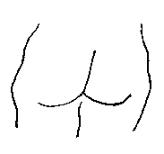

|
Y'a dg'ieau caude dans la p'tite maîson; Vite! Va qu'si lé plionmi! Ch'est qu'les tchuyaux ont 'té mêlés; Man tchu est mié-bouoilli. Lé trône a 'té changi en ticl'ye Par eune faute d'la plionm'thie. I' faut y'ajouôter des gliaichons Pouor saûver man tchu tchuit! Dêmêle don ches tchuyaux, s'i' t'pliaît; Mes fêsses daivent èrfraidgi. Là-bas i' m'faut un mio d'confort; Hors auve chu jacuzzi!
|

Viyiz étout: